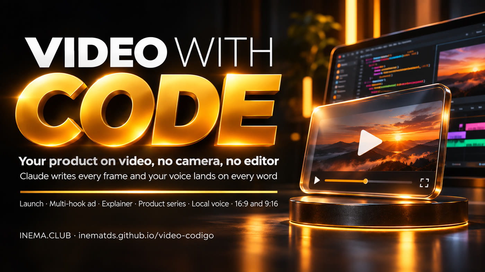

Answer three questions and the agent writes every frame in HTML, renders the MP4 in 16:9 and 9:16, and, if you want narration, syncs each image to the word your voice is saying.

video-codigo is a skill (a package of instructions and scripts) for Claude Code and Codex, Anthropic's and OpenAI's coding agents, that makes videos without a camera or editing software: every frame is written in code (HTML, Canvas, or SVG) and becomes an MP4. It’s for anyone who wants to show a product, project, or idea on video—a launch, ad, explainer, or lesson. If the video has narration, the voice is generated on your computer at no extra cost, and each image appears the moment its word is spoken. To use it, you need Node, Python, and FFmpeg; for voice, you need inemavox with an NVIDIA GPU (without it, the video has music only).
The skill asks what matters, proposes a direction, tests a clip, and only then renders the full video.
The skill can direct launches, ads with multiple hooks, product explainers, series with a consistent look, narrated sales videos, and long lessons. Two ready-to-copy examples are included: a narrated explainer and a music-only launch.
scripts/voz.py generates narration in your cloned voice and measures the timing of every word. In HTML, pal('phrase', 'word') tells each element when to appear.
The same project adapts to each format. One render for YouTube, another for Reels, Shorts, and TikTok.
With voice, speech sets the video's timing. Without voice, the music does.
What is it about, and who is it for? (it can be a folder, a repository, or a website to read) · Voice or music only? · What style? — the INEMA default or a reference video.
Chatterbox speaks each sentence using your cloned voice; Whisper listens, checks, and timestamps each word. Any sentence that comes out wrong is generated again.
A headless browser opens the page, requests the frame for each instant (window.seek(t)), and FFmpeg combines everything with the audio. No network required: fonts and images stay in the project.
The installer (instalar.sh) installs Playwright and Chromium automatically, without sudo. It only checks for the rest and shows you the command to install each one.
Node 18 or newer, Python 3 with numpy, scipy, and Pillow, and FFmpeg on your PATH.
# check node -v && python3 -V && ffmpeg -version | head -1 # Python libraries (Ubuntu/Debian) sudo apt install python3-numpy python3-scipy python3-pil # other systems python3 -m pip install --user numpy scipy pillow
A headless browser controlled by a script that takes a snapshot of every video frame. It goes in ~/.cache.
# instalar.sh (step 1) runs this already
bash ~/projetos/video-codigo/scripts/preparar-entorno.shVoice uses inemavox installed in ~/projetos/inemavox: Chatterbox (a model that speaks using a voice copied from a recording, or “cloned voice”) and Whisper (a model that listens to audio and timestamps each word). You also need Miniconda (a Python environment manager; the official installer goes in ~/miniconda3) and a clean 10–20 s recording of your voice in .wav format. The models download a few GB the first time. If conda or inemavox is installed elsewhere, point to them with CHATTERBOX_PYTHON=/caminho/python3 and INEMAVOX_DIR=/caminho/inemavox. Without a GPU or inemavox, make music-only videos.
# all three must exist ls ~/miniconda3/envs/chatterbox/bin/python3 \ ~/projetos/inemavox/chatterbox_tts_worker.py \ ~/projetos/inemavox/venv/bin/python # install (tested: Python 3.11, chatterbox-tts 0.1.6) git clone https://github.com/inematds/inemavox ~/projetos/inemavox conda create -n chatterbox python=3.11 -y ~/miniconda3/envs/chatterbox/bin/pip install chatterbox-tts==0.1.6 cd ~/projetos/inemavox && python3 -m venv venv && venv/bin/pip install faster-whisper soundfile numpy
Usually, you just ask the agent (step 2): it writes the script and scenes, then runs everything. The commands in later steps are what it runs—and let you redo a step manually. First, run this in the terminal ($K is the kit folder, $P is your video folder):
K=~/projetos/video-codigo # where the kit was cloned P=~/videos/trabalho/2026-11-06-meuapp # one folder per video mkdir -p "$P"
Clone the repository, connect the skill to Claude Code and Codex, and install the rendering browser.
git clone https://github.com/inematds/video-codigo ~/projetos/video-codigo bash ~/projetos/video-codigo/instalar.sh # ✓ skill in ~/.claude/skills/video-codigo
Test the installation by rendering the ready-made example (no voice or GPU needed; takes about 1 minute):
cd ~/projetos/video-codigo/exemplos/lancamento && node ../../scripts/render-video.mjs --project . --output teste.mp4 --audio audio/lancamento/mezcla.wav --overwrite
Tell the agent the subject and, if available, where the material is. The agent asks the three questions you haven’t answered. For narration in your voice, tell it where your .wav recording is.
/video-codigo make a 40 s video of my app, read the ~/projetos/meu-app folder, narrated with the voice from ~/minha-voz.wav, INEMA style
Without narration, you don’t need a script or a GPU. The easiest way is to ask the agent (“music only, 20 s”)—it writes the scenes. To start from the launch example manually, here’s what to change in the <script> in index.html:
• window.videoSpec = {… duration: 21} — video length in seconds; use the same length as the music.
• SEG — the list of segments: a and b are the seconds when each segment starts and ends; rot and sub are the title and subtitle.
• S — where the yellow shape is and how large it is at each second (t); it connects one segment to the next.
• function conteudo — the drawing inside the shape for each segment (modules, page, play, terminal, conversation). Replace these with your product’s elements.
cp -r $K/exemplos/lancamento/{index.html,motion.mjs,inema} $P/ python3 $K/scripts/mezcla.py --projeto $P --id meuapp --duracao 21 --musica energica --lufs -14 # same duration as videoSpec
Then go to step 7 (preview) and step 8 (render, with --audio $P/audio/meuapp/mezcla.wav).
File $P/roteiro.json. Each sentence has an id: that’s what the image syncs to. In voz, put the path to your recording. dicionario replaces what appears on screen with what the voice should read.
{"id": "meuapp", "pausa": 0.28, "voz": "/home/voce/minha-voz.wav",
"dicionario": [["16:9", "dezesseis por nove"]],
"blocos": [{"id": "abertura", "frases": [
{"id": "hook", "texto": "This video has no camera."},
{"id": "codigo", "texto": "Every frame was written in code."}]}]}
Runs on your computer. Outputs $P/voz/meuapp/voz.wav and $P/voz/meuapp/tiempos.js (the timing of each word); any sentence with less than 80% similarity is regenerated automatically.
python3 $K/scripts/voz.py --projeto $P $P/roteiro.json # e.g.: meuapp: 41.9 s · 12 sentences · 107 words
Original synthesized music (energica, 120 beats per minute; tranquila, 84; or --pista with your own music), 24 dB below the voice while speaking. --lufs -14 sets the final volume to the level YouTube and Instagram use (so the platform doesn’t turn it down or make it too loud). Without voice, pass --duracao in seconds.
python3 $K/scripts/mezcla.py --projeto $P --id meuapp --musica tranquila --lufs -14 # → $P/audio/meuapp/mezcla.wav
Start from the narrated example: it already includes the theme, timing engine, and skeleton used by the renderer (videoSpec = size and duration, seek(t) = draws moment t, renderReady = signals when fonts and images have loaded). Replace the scene text and, in every pal('frase', 'palavra'), ini('frase'), and data-in, use the ids and words from your script. If any from the example are left over, the render stops and tells you which one: Não encontrei «câmera» na frase hook do roteiro.
cp -r $K/exemplos/explicativo-narrado/{index.html,engine.mjs,motion.mjs,declarativo.mjs,inema} $P/ cp $P/voz/meuapp/tiempos.js $P/ # your voice timings
// in the <script> in index.html: each element appears on the spoken word pop($('.code', c1), t, pal('codigo', 'escrito')); // appears when the voice says "written" pop($('.onda', c1), t, ini('voz')); // appears at the start of the sentence "voice"
Capture still frames at tricky moments in both formats and check them before spending time on the full video. --still is the second in the video (it must be within its duration; for a 5 s script, use 2 or 3).
node $K/scripts/render-video.mjs --project $P --output $P/prova.png --still 2 node $K/scripts/render-video.mjs --project $P --output $P/prova-v.png --still 2 --width 1080 --height 1920
One MP4 per format and a contact sheet to review the entire video at once.
node $K/scripts/render-video.mjs --project $P --output $P/renders/meuapp-16x9.mp4 --audio $P/audio/meuapp/mezcla.wav node $K/scripts/render-video.mjs --project $P --output $P/renders/meuapp-9x16.mp4 --width 1080 --height 1920 --audio $P/audio/meuapp/mezcla.wav python3 $K/scripts/inspect-video.py $P/renders/meuapp-9x16.mp4 --output-dir $P/reviews
The code, script, and audio for each are in exemplos/. Not a single frame was filmed. The quickest first win, with no voice or GPU: render the launch example.
cd $K/exemplos/lancamento && node ../../scripts/render-video.mjs --project . --output teste.mp4 --audio audio/lancamento/mezcla.wav --overwrite
Done = in the repository and used in the examples.